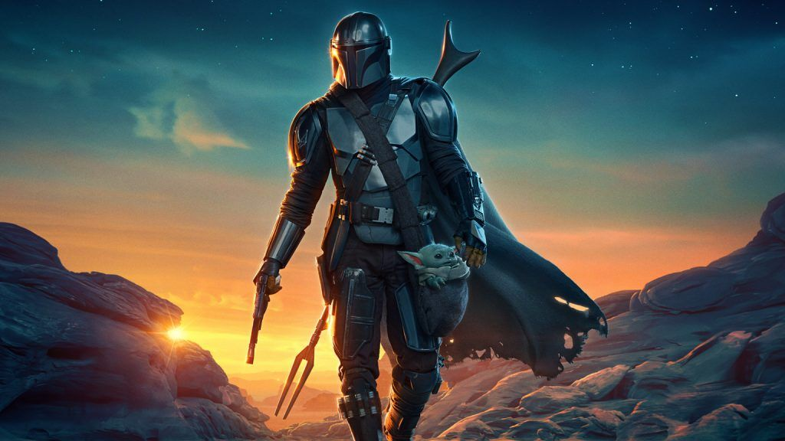

The Madalorian

The Mandalorian is a bounty hunter known simply as "the Mandalorian."
He is a rugged, solitary figure who operates on the fringes of society
and has a strict code of conduct. He is skilled in combat and is a
formidable opponent. Despite his tough exterior, the Mandalorian is shown
to have a soft spot for the innocent and is willing to go to great lengths
to protect them. Here are a few reasons why I admire the Mandalorian.
-
His sense of honor and loyalty: Despite being a bounty hunter,
the Mandalorian has a strict code of conduct and is fiercely
loyal to his clients and those he has sworn to protect.
-
His resourcefulness and combat skills: The Mandalorian is a skilled fighter
and is able to think on his feet in difficult situations. He is able to overcome
challenges and outmaneuver his enemies using his wits and combat skills.
-
His compassion and sense of justice: The Mandalorian is shown to have a soft spot
for the innocent and is willing to go to great lengths to protect them. He is driven
by a sense of justice and is not afraid to stand up for what he believes in, even if
it means going against the grain.
You can find more information about Mando
here.